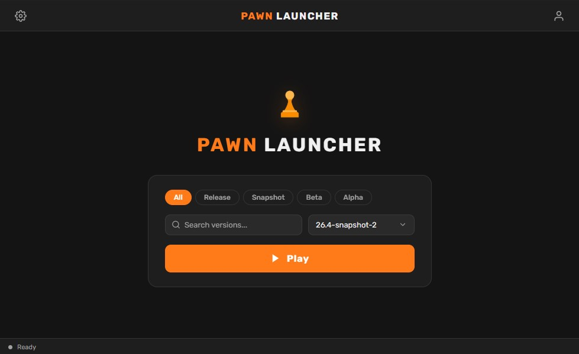
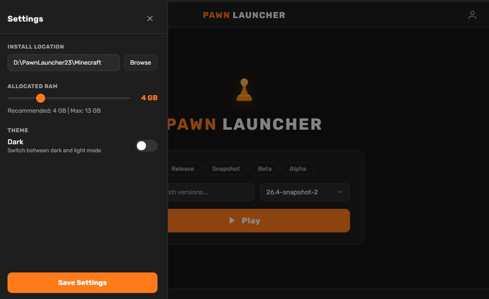
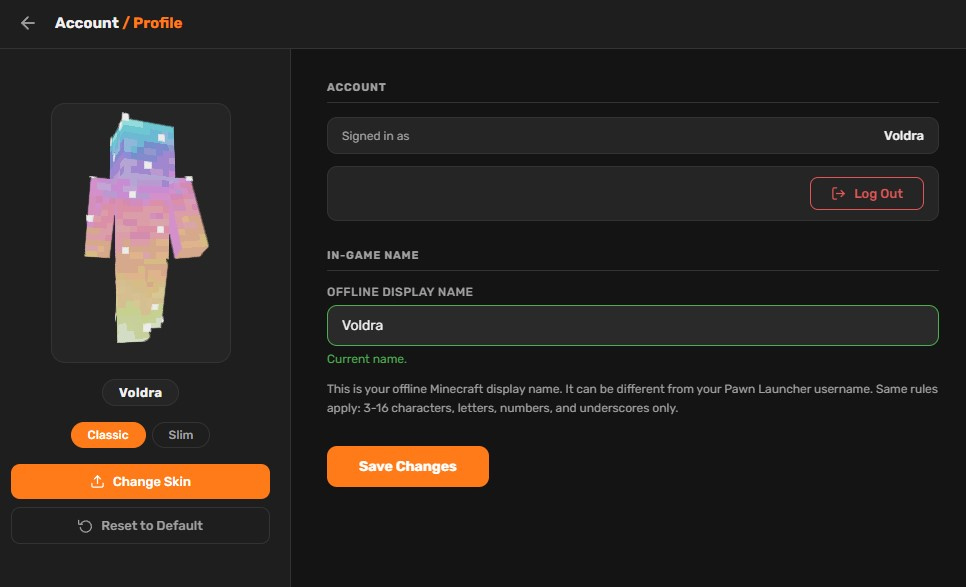

⚡
Instant Launch
Open the launcher and get into your game quickly.
A simpler way to start playing
A fast, clean Windows launcher that gets you from desktop to game without the clutter.
Features
Every part of Pawn Launcher is focused on a predictable, uncluttered path from opening the app to launching your game.
Open the launcher and get into your game quickly.
Everything important is visible without distracting menus.
See the version, file size, and safety notice before downloading.
A familiar installer made for modern 64-bit Windows.
No subscription, paywall, or hidden upgrade.
Download the latest installer whenever a new version arrives.
Installation & usage
Pawn Launcher is designed for a simple first run. Follow the guide below, then keep the launcher available whenever you want a quick route into your game.
Save PawnLauncher_Setup.exe to your computer.
Run the setup wizard and follow the Windows prompts.
Open Pawn Launcher and select Launch when ready.
System requirements
Requirements for the launcher itself.
| Component | Minimum | Recommended |
|---|---|---|
| Operating system | Windows 10, 64-bit | Windows 11, 64-bit |
| Processor | Dual-core 2.0 GHz | Intel Core i3 / AMD Ryzen 3 or better |
| Memory | 4 GB RAM | 8 GB RAM |
| Storage | 100 MB available space | 250 MB available space |
| Internet | Required for download and online services | Stable broadband connection |
FAQ
Yes. The launcher is offered as a free Windows download. You can install and use it without a subscription or recurring payment.
The current release is intended for 64-bit Windows 10 and Windows 11 systems. Older versions of Windows may not receive full support.
The current installer is approximately 17.4 MB. Your browser may show a slightly different size because of download metadata or future release changes.
Pawn Launcher is intended to open when you need it and launch the selected game. Close it normally when you are finished.
Only continue if you downloaded the installer from the official website and trust the source. Check the file name and scan the installer with your preferred security tools before running it.
Screenshots



One download. One install. Zero hassle.
Pawn Launcher keeps the path from desktop to game short, clear, and lightweight. No clutter, no subscription, just the tools you need.
We prioritize fast startup, readable design, transparent downloads, and simple updates for Windows players.
For feedback or installer support, email support@pawnlauncher.me.
Please include your Windows version and a short description of the issue. Never send passwords or private security information.
We do not require an account to download Pawn Launcher. Contact messages include only the information you choose to send.
Cookies or advertising services may be used to operate and improve the site. You can manage cookies and personalized ads through your browser and Google Ads Settings.
Read the full Privacy Policy.
Use the installer only on a compatible Windows device. Download it from this official website, keep Windows and antivirus software updated, and scan files before opening them.
By downloading, you accept the Terms of Service & Disclaimer.